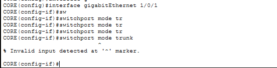

Infraestrutura de rede corporativa
Rede de uma empresa fictícia com quatro setores, segmentada por VLANs, com roteamento entre VLANs em um switch multicamada e DHCP centralizado com relay. Montada, testada e documentada no Cisco Packet Tracer.

Cenário
O que a rede precisava fazer
Uma empresa fictícia com quatro setores: Administrativo, TI, Comercial e Servidores. Os requisitos:
- Separar o tráfego de cada setor em uma VLAN e uma rede IP próprias.
- Permitir a comunicação entre os setores por meio de roteamento no switch de núcleo.
- Entregar endereços IP automaticamente aos computadores, a partir de um único servidor DHCP na rede de servidores.
- Ligar os switches de acesso ao núcleo por trunks 802.1Q.
Arquitetura
Duas camadas, núcleo colapsado
O CORE, um Catalyst 3650, concentra as funções de núcleo e distribuição: é nele que ficam os gateways das quatro redes e o roteamento entre elas. SW1, SW2 e SW3, todos Catalyst 2960, formam a camada de acesso e se ligam ao CORE em estrela, cada um por um trunk.
| VLAN | Nome | Rede | Gateway | Hosts |
|---|---|---|---|---|
| 10 | ADMINISTRATIVO | 192.168.10.0/24 | 192.168.10.1 | DHCP, a partir do .100 |
| 20 | TI | 192.168.20.0/24 | 192.168.20.1 | DHCP, a partir do .100 |
| 30 | COMERCIAL | 192.168.30.0/24 | 192.168.30.1 | DHCP, a partir do .100 |
| 40 | SERVIDORES | 172.16.40.0/24 | 172.16.40.1 | Servidor com IP fixo 172.16.40.2 |
Implementação
Como foi configurado
-
VLANs em todos os switches
As quatro VLANs foram criadas e nomeadas no CORE e nos três switches de acesso.
vlan 10 name ADMINISTRATIVO vlan 20 name TI vlan 30 name COMERCIAL vlan 40 name SERVIDORES -
Portas de acesso e trunks
No SW1 e no SW2, cada PC fica em uma porta de acesso da VLAN do seu setor. No SW3, a porta do servidor fica na VLAN 40. As ligações com o CORE são trunks 802.1Q.
! SW1 e SW2 interface FastEthernet0/1 switchport access vlan 10 switchport mode access interface FastEthernet0/2 switchport access vlan 20 switchport mode access interface FastEthernet0/3 switchport access vlan 30 switchport mode access interface GigabitEthernet0/1 switchport mode trunk -
Gateways e roteamento no CORE
Cada VLAN ganhou uma interface virtual (SVI) com o IP do gateway, e o
ip routingliga o roteamento entre elas.ip routing ! interface Vlan10 ip address 192.168.10.1 255.255.255.0 interface Vlan20 ip address 192.168.20.1 255.255.255.0 interface Vlan30 ip address 192.168.30.1 255.255.255.0 interface Vlan40 ip address 172.16.40.1 255.255.255.0 -
DHCP centralizado com relay
O pedido DHCP do PC é um broadcast e não sai da VLAN. A SVI no CORE recebe o pedido e, por causa do
ip helper-address, encaminha ao servidor 172.16.40.2 em unicast, informando o próprio IP. O servidor usa esse endereço para escolher o pool da rede certa.interface Vlan10 ip helper-address 172.16.40.2 interface Vlan20 ip helper-address 172.16.40.2 interface Vlan30 ip helper-address 172.16.40.2Figura 2Pools DHCP no servidor, um para cada rede de usuários.

Testes
O que foi testado
Os testes de conectividade foram feitos primeiro com IPs fixos e repetidos com os endereços entregues pelo DHCP. A saída de cada um está na documentação completa.
| Teste | Comando | Resultado |
|---|---|---|
| VLANs no CORE | show vlan brief | 10, 20, 30 e 40 ativas, com os nomes dos setores |
| Trunks | show interfaces trunk | Três trunks 802.1Q, com as VLANs em forwarding |
| Vizinhos do CORE | show cdp neighbors | SW1, SW2 e SW3 nas portas previstas |
| Rotas | show ip route | As quatro redes conectadas, uma em cada SVI |
| Ping na mesma VLAN | ping 192.168.10.101 | 4 de 4 respostas, TTL 128 |
| Ping entre VLANs | ping 192.168.30.100 | 3 de 4 respostas, TTL 127 |
| Ping ao servidor | ping 172.16.40.2 | 4 de 4 respostas, TTL 127 |
| DHCP com relay | ipconfig /release e /renew | PC-ADM1 recebeu de novo o 192.168.10.102; os seis PCs têm IP do pool da sua VLAN |
TTL 128 na mesma VLAN, TTL 127 entre VLANs: o salto a menos é o CORE roteando.
Na mesma VLAN, a resposta não passa por roteamento e chega com TTL 128. Para outra VLAN e para o servidor, o CORE roteia o pacote e desconta um salto. O primeiro pacote perdido no ping entre VLANs é esperado: ele se perde enquanto o CORE resolve o ARP do destino.
Trecho da saída · PC-ADM1 para PC-COM2C:\>ping 192.168.30.100
Request timed out.
Reply from 192.168.30.100: bytes=32 time<1ms TTL=127
Reply from 192.168.30.100: bytes=32 time<1ms TTL=127
Reply from 192.168.30.100: bytes=32 time<1ms TTL=127Troubleshooting
Problemas encontrados e soluções
Problema 1
Trunk recusado no CORE
- Sintoma
- PCs da mesma VLAN em switches diferentes não se comunicavam, e o
switchport mode trunkretornava% Invalid input detectedna porta do CORE. - Solução
- Executar
switchportna interface, colocando a porta em camada 2, e então configurar o trunk. - Lição
- Em switch multicamada, conferir se a porta está em camada 2 antes de configurar trunk.

Problema 2
PCs sem comunicação até renovar o DHCP
- Sintoma
- A comunicação a partir dos PCs do SW1 parecia falhar, como se as VLANs não passassem pelo trunk.
- Diagnóstico
- VLANs e trunks estavam corretos no CORE, e com IP fixo todos os pings funcionaram. O problema estava no endereçamento dos PCs.
- Solução
- Refazer o pedido DHCP: os PCs receberam IP sem nenhuma outra mudança na rede. Provavelmente, os pedidos anteriores foram feitos antes de a rede estar completa.
- Lição
- Depois de mexer na rede, renovar o IP antes de concluir que há falha, e testar com IP fixo para separar problema de rede de problema de DHCP.
Problema 3
Configuração com sobras, encontrada na revisão
- Sintoma
- Nenhum impacto no funcionamento. Apareceu na revisão do running-config antes da publicação.
- Solução
- Os helpers que apontavam para os próprios gateways foram removidos, ficando só o do servidor, e as linhas
switchport access vlanque sobraram nos trunks saíram. A configuração limpa foi salva comcopy running-config startup-config. - Lição
- O
ip helper-addressaponta para o servidor DHCP, e cada correção precisa ser salva para sobreviver a um reinício.
Fechamento
Aprendizados e próximos passos
O que fica
- Tráfego na mesma VLAN é de camada 2: passa pelos trunks e não depende do gateway.
- Em switch multicamada, a porta precisa estar em camada 2 para virar trunk.
- O relay DHCP aponta para o servidor, que escolhe o pool pela rede da SVI que encaminhou o pedido.
- Testar com IP fixo separa falhas de rede de falhas de DHCP.
- Revisar e salvar a configuração antes de documentar.
Próximos passos
- Versão 2: redundância do CORE, evoluindo este mesmo laboratório.
- ACLs para controlar o acesso entre os setores.
- Roteador de borda para simular a saída para a internet.